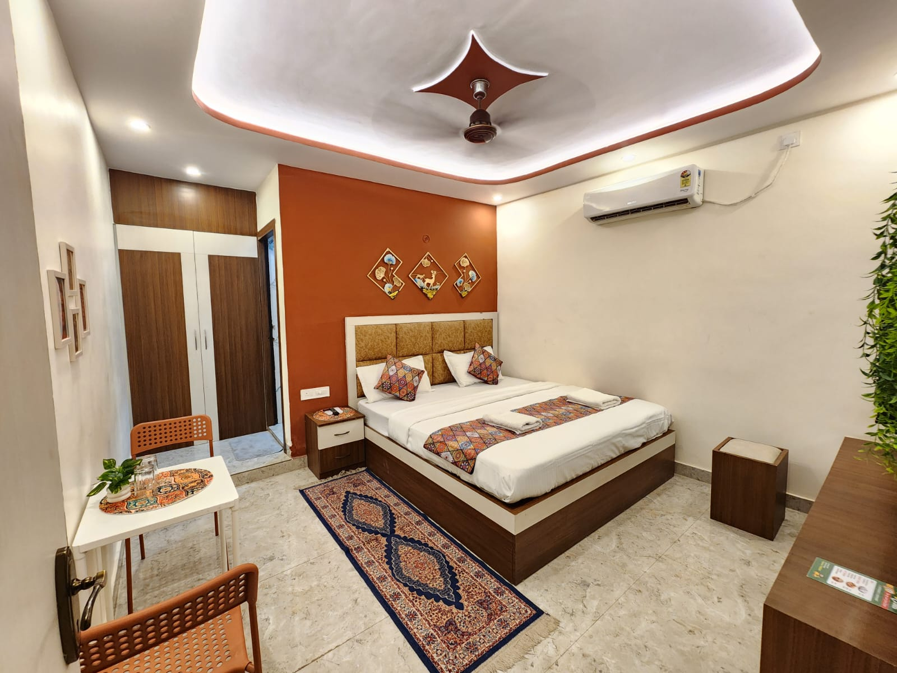
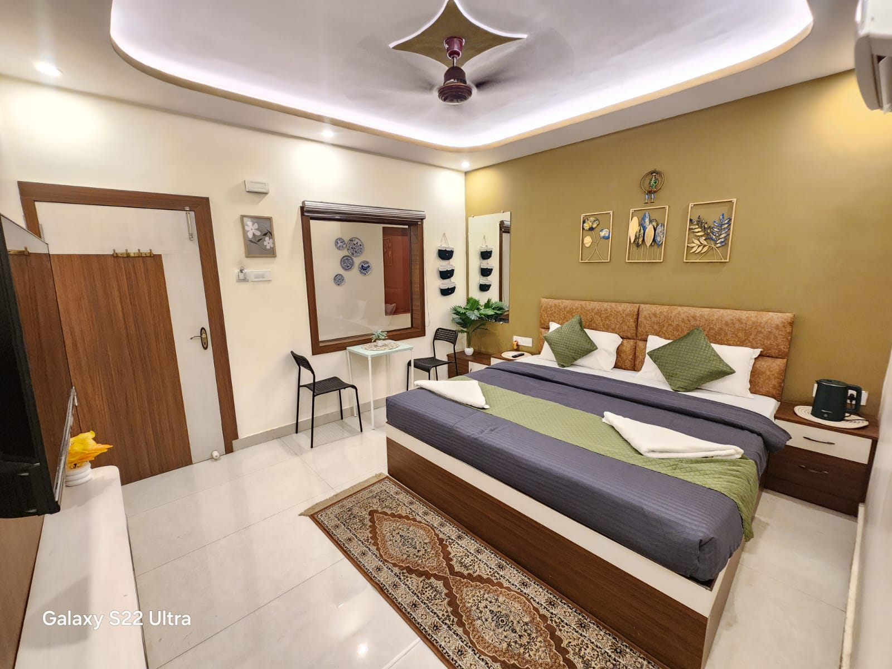
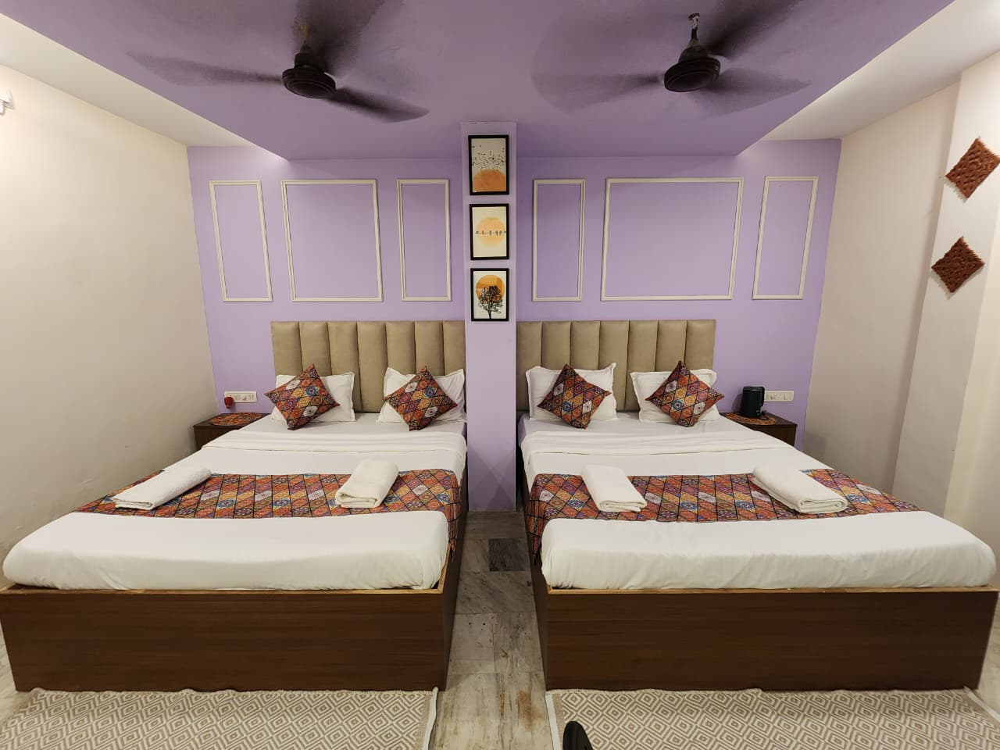
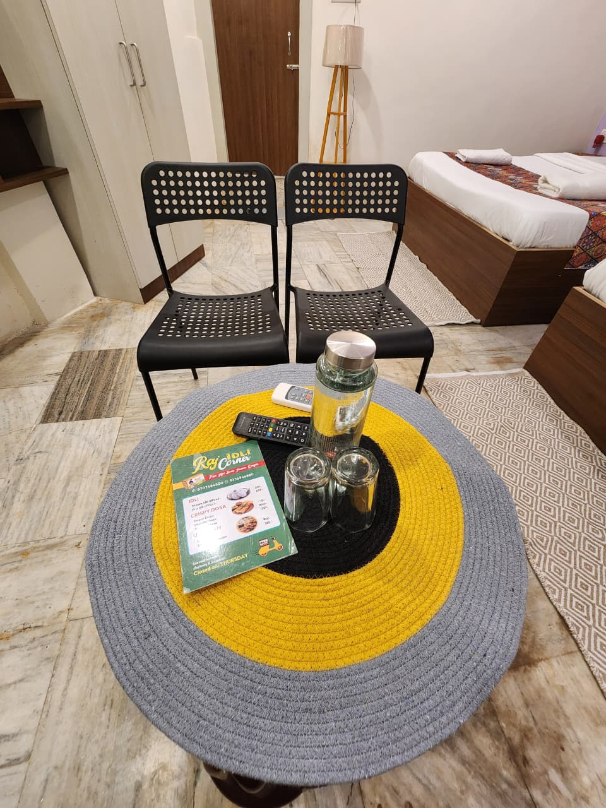
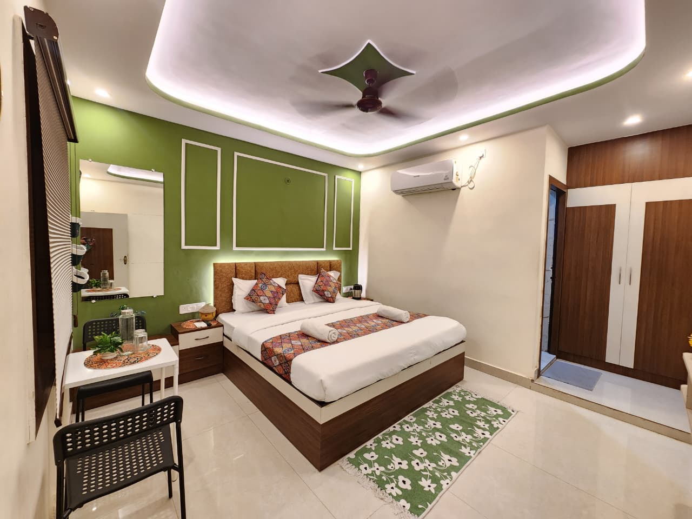

01 / 03↗The stay
Terracotta Room
King bed · 2 guests
Air-conditioning · Wi-Fi
A home base for the curious
A thoughtful stay in Varanasi for slow mornings, full days and the kind of stories you carry home.
Not just a room in the city
Nomadic Kashi is the local layer of Shree Satya Inn — a welcoming place to land between river light, temple bells, street food and long walks.
We make the details easy, so you can spend your time noticing what makes Varanasi unlike anywhere else.
Meet your stay ↗Rooms, apartments & more
Bright, comfortable spaces with the little things that let you exhale: cool sheets, generous beds, thoughtful corners and a calm place to come back to.

01 / 03↗The stay
King bed · 2 guests
Air-conditioning · Wi-Fi

02 / 03↗The apartment
King bed · 2 guests
Sitting nook · Breakfast

03 / 03↗The gathering
2 double beds · 4 guests
Lounge corner · Flexible stays
At Nomadic Kashi
The best plans are
made in the morning.
Tea first. Then the river.

Local, unhurried, ours
Go beyond the checklist. We’ll help you find the rhythm of the city — at sunrise on the river, down a lane you’d never take alone, over chai with someone who knows the best stories.

One of the rooms / made for slow morningsNeed a little help navigating?
From scooters to a driver for the day, airport transfers to a café with the right kind of quiet — we can make the practical parts feel easy.
A little inspiration
Small notes from the city we call home. Save them for later or send them to the friend who keeps saying they want to visit Varanasi.
Come find us
Tell us what brings you to Varanasi. We’ll help you shape the stay around it.